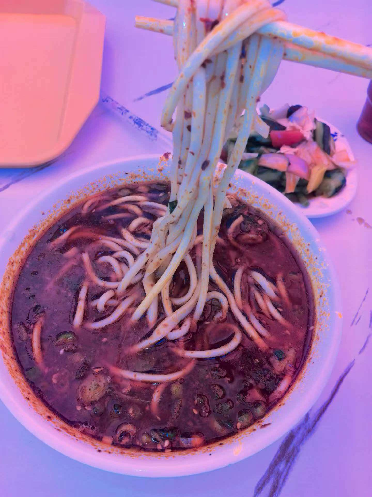

Teaching Kids
There's nothing like watching a child's eyes light up when a new idea clicks. I've taught kids of all different ages, and every age has its own kind of magic.
I'm from Lanzhou, in Gansu Province on the northwest side of China. I've been a teacher, and some of my favorite moments have been spent with children of all different ages - watching them light up when something finally clicks. These days, when I'm not teaching or building little things on the web, you'll find me hanging out with my very cute dog (he just turned three!), hunting for a good bowl of noodles, or just enjoying a slow afternoon.
I come from Lanzhou, Gansu Province, in the beautiful northwest of China. Being a teacher has shaped how I see the world - I've worked with children of all different ages, and I've learned that patience, curiosity, and a little warmth go a long way. Those same ideas guide how I build things too.
At home, there's a very cute three-year-old dog who keeps me company and keeps me honest about taking breaks. I care a lot about warmth - in teaching, in code, in conversations - and I try to bring a little of that into everything I make. I'm always up for a friendly project, a new idea, or a good chat about almost anything.
There's nothing like watching a child's eyes light up when a new idea clicks. I've taught kids of all different ages, and every age has its own kind of magic.
He's three years old, full of energy, and the best coworker I could ask for. Walks with him are how I think through half of my ideas.

I grew up in Lanzhou, and a steaming bowl of beef noodle soup will always feel like home. Wherever I go, I'm chasing that same cozy feeling.